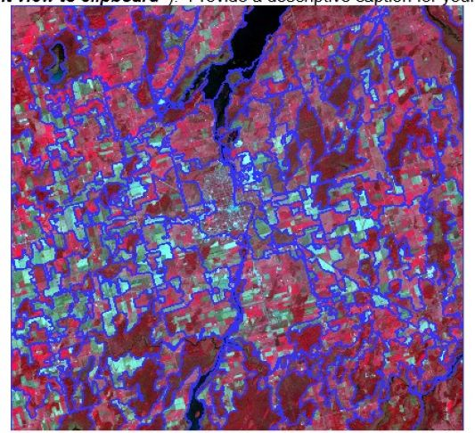

Remote Sensing Images
1 / 14

Example 1: Created in AutoCAD map 3D. Created from a design sketch provided to us for an assignment.
2 / 14

Example 2: Created in AutoCAD map 3D. Created from a design sketch provided to us for an assignment.
3 / 14

Example 3: Created in AutoCAD map 3D. Had to calculate bearings from just the reference bearings and internal angles and without knowing the shape for an assignment.Foresights and backsights were also provided.
4 / 14
Example 1: Created in AutoCAD map 3D. Created from a design sketch provided to us for an assignment.
5 / 14

Example 2: Created in AutoCAD map 3D. Created from a design sketch provided to us for an assignment.
6 / 14
Example 3: Created in AutoCAD map 3D. Had to calculate bearings from just the reference bearings and internal angles and without knowing the shape for an assignment.Foresights and backsights were also provided.
7 / 14

Example 1: Created in AutoCAD map 3D. Created from a design sketch provided to us for an assignment.
8 / 14

Example 2: Created in AutoCAD map 3D. Created from a design sketch provided to us for an assignment.
9 / 14

Example 3: Created in AutoCAD map 3D. Had to calculate bearings from just the reference bearings and internal angles and without knowing the shape for an assignment.Foresights and backsights were also provided.
10 / 14
Example 1: Created in AutoCAD map 3D. Created from a design sketch provided to us for an assignment.
11 / 14
Example 2: Created in AutoCAD map 3D. Created from a design sketch provided to us for an assignment.
12 / 14

Example 3: Created in AutoCAD map 3D. Had to calculate bearings from just the reference bearings and internal angles and without knowing the shape for an assignment.Foresights and backsights were also provided.
13 / 14

Example 1: Created in AutoCAD map 3D. Created from a design sketch provided to us for an assignment.
14 / 14

Example 2: Created in AutoCAD map 3D. Created from a design sketch provided to us for an assignment.